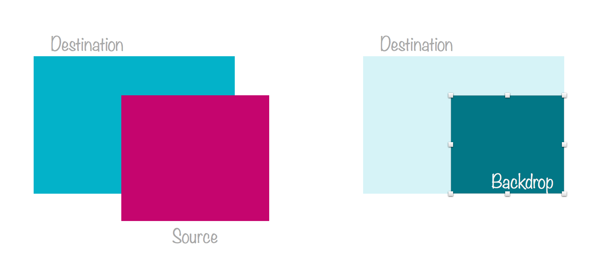
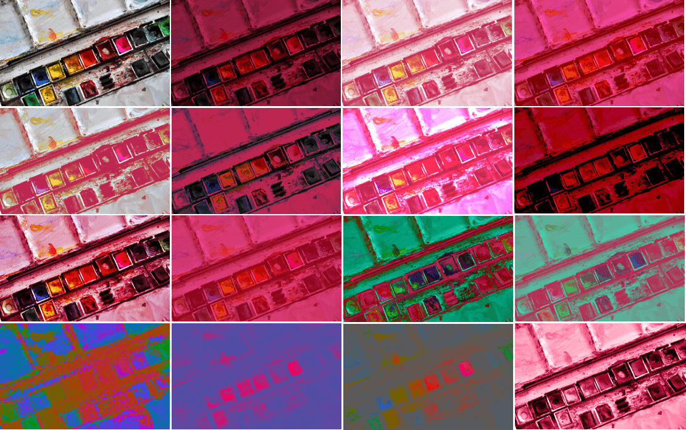
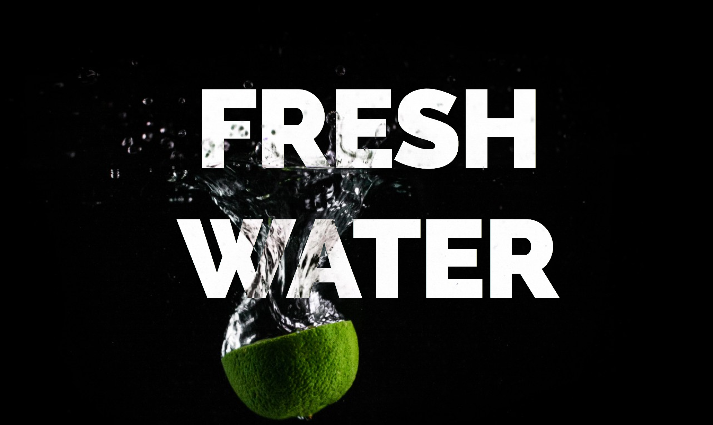
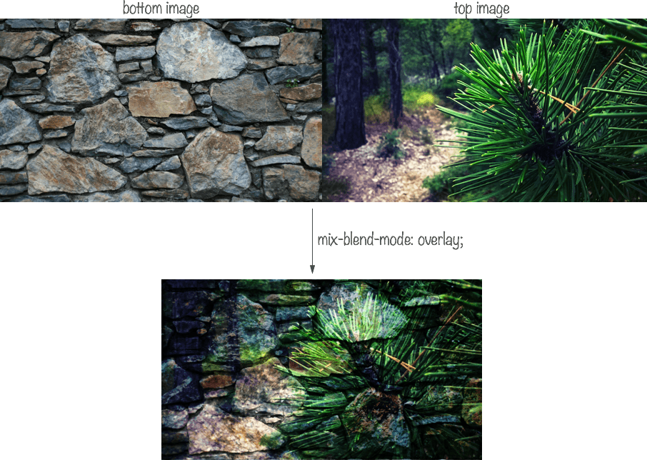

If you’re a designer, then you’ve probably already come across blending effects some time or the other. Blending is one of the most frequently used effects in graphic and print design. You can add texture to text by blending it with its textured backdrop, create an illusion of merged images by blending these images together, and create a wide range of colorful effects that would not be possible without that fine level of color blending control.
Graphics editors such as Photoshop or Illustrator come with a set of blending modes. Blend modes allow you to specify how you want your elements to blend together, thus changing the colors of the area where these elements intersect. Each mode uses a specific color formula to mix the colors of the source and the destination.
Different modes give different end results. Before we talk about the different blend modes, and since we mentioned the source and destination elements, let’s have a quick look at the concept of compositing, and how it is related to blending in CSS.
Compositing is the combining of a graphic element with its backdrop.
A backdrop is the content behind the element and is what the element is composited with.

Compositing defines how what you want to draw will be blended with what is already drawn on the canvas. The source is what you want to draw, and the destination is what is already drawn (the backdrop).
So, if you have two elements, and these elements overlap, you can think of the element on top as being the source, and the parts of the element behind that lie beneath it, will be the destination.
Using different composite operations (there are 16 operations), you can specify which parts of the two overlapping elements will be drawn, and which will not.

These composite operations are known as Porter Duff compositing operations. These operations specify what portions of the source and destination will be drawn, and blend modes specify how how the colors from the graphic element (source) and the backdrop (destination) interact. The illustrations in the above image are from the Compositing and Blending spec.
In HTML5 Canvas context, these oprations are specified using the globalCompositeOperation property, and can be used to clip backgrounds to specific shapes, such as text, thus creating the effect of texture-filled text in Canvas. I have written about this process in this article over at Codrops.
Together, Porter Duff Compositing and blending form the overall compositing operation for intersecting elements. According to the specification, “typically, the blending step is performed first, followed by the Porter-Duff compositing step. In the blending step, the resultant color from the mix of the element and the the backdrop is calculated. The graphic element’s color is replaced with this resultant color. The graphic element is then composited with the backdrop using the specified compositing operator.”
Therefore, the way two intersecting or overlapping elements are handled is by blending their colors based on a blend mode, and then drawing only the parts specified by the composite operation.
In CSS, we have no way to specify a composite operation. The default composite operation used is source-over. Both the source and the destination elements remain, and the area where they intersect is blended using the blend mode specified.
Before the Compositing and Blending specification was introduced, CSS allowed one type of composite operations: simple alpha compositing. This is what the opacity property is for. By changing an element’s opacity, the browser makes it translucent so that the colors of its backdrop can show through.
Today, two main properties exist that allow us to blend elements and backround images by specifying one of 16 available blend modes. These two properties are background-blend-mode and mix-blend-mode. Let’s get to know each.
background-blend-mode PropertyThe background-blend-mode property, as its name suggests, is used to specify a blend mode for an element’s background layer. A background layer can be an image, or the background color.
In other words, background-blend-mode allows you to blend together an element’s background image with the images and/or background color behind it.
If the element has more than one background image, you can specify multiple blend modes—each blend mode will be used for a background image such that the first blend mode in the list corresponds to the first background image in the list of background images, and so on.
Then, each background layer is blended with the element’s background layer that is below it and the element’s background color. Which means that, if you have two background images and a background color:
background-image: url(first-image.png), url(second-image.png); background-color: orange; background-blend-mode: screen, multiply;
The second-image.png background will blend with the background color using the multiply mode, and then the first-image.png background will blend with the second image and the background color using the screen blend mode. (Reminder: the first background image in the list is the one on top, and the ones following it are beneath it.)
Note that an element’s background layers must not blend with the content that is behind the element, instead they must act as if they are rendered into an isolated group.
Also note that if the background shorthand is used, the background-blend-mode property for that element must be reset to its initial value.
Okay so we’ve established that each background layer can get its own blend mode which specifies how it blends with the layers beneath it. But what blend mode options do we have?
There are 16 blend modes available in CSS: normal (which is the default blend mode and means that no blending is applied), multiply, screen, overlay, darken, lighten, color-dodge, color-burn, hard-light, soft-light, difference, exclusion, hue, saturation, color and luminosity.
Each filter, when applied to an image, for example, will give a different end result—the colors of the image are going to be changed based on the mode you choose.
normalmultiplyscreenoverlaydarkenlightencolor-dodgecolor-burnhard-lightsoft-lightdifferenceexclusionhuesaturationcolorluminosityThe following image shows the result of applying the different blend modes to an image, in the same order mentioned above, starting from the top left corner.

For more information about these blend modes, I refer you to this article on the SLR Lounge blog. It claims to be the ultimate visual guide to blend modes, and does include some nice explanations of the blend modes.
Personally, I think that even with the definition for each mode at hand, it can be really hard (if not impossible) to predict the result of applying these modes to an image.
Picking a suitable blend mode will be—in most cases—a case of trial and error. If you use Instagram you know that sometimes you just go over each of the available filters, applying them one after the other, till you get the effect you’re after. (I know I do that!) With CSS blend modes, it’s practically the same.
For that reason, I’ve created a simple interactive demo that you can use to pick the right blend mode for your effects.
You can upload an image, and choose a background color to blend it with. The background color of the live preview (thumbnails) will live-update as you make your way around the color picker. Clicking on a thumbnail will preview the selected blend mode in the larger preview area.
Try the blend modes in the demo out.
Of course, the effects will be visible only in browsers that support the background-blend-mode property. For more information about browser support, refer to the compatibility table over at CanIUse.com.
In addition to blending a background image with a background color in the interactive demo, you can also blend a piece of text with the element that has this background.
But blending separate elements together requires a property other than the background-blend-mode property. Let’s have a look at that next.
mix-blend-mode PropertyAs we mentioned earlier, a backdrop is the content behind the element and is what the element is composited with.
The content behind the element can be anything—including other elements. And this is where the interesting effects come in. Think fixed headers blending with the content as the page scrolls down, or text blended with an image in the background, or text blending with other text, etc.
Blending elements together is done using the mix-blend-mode property.
The mix-blend-mode property is similar to the background-blend-mode property, and takes the same blend mode values. So, you can specify any blend mode to get different blending effects.
For example, the text in the following image blends with the image behind it using mix-blend-mode: difference, giving the illusion of the water bubbles passing through and in front of the text. The reason this effect is established is the color inversion process of the difference mode.

The area of the image where it overlaps with the text is the text’s backdrop, and that is where the blending happens. You can check the live demo out here.
Using mix-blend-mode, you can create many creative effects—far more than I could list in this post. One particularly interesting effect you can create is see-through text. Without CSS blend modes, you would need CSS masking and/or background clipping, along with some CSS hackery to create this effect and make it work.
With blend modes, and using the difference blend mode again, you can create this effect by—again—leveraging the color inversion process.
The following image shows this effect in action. It is merely a piece of text, positioned on top of an image, and blended with it.
That’s pretty cool, isn’t it? You can check the live demo out here.
It is worth noting here that the colors you choose strongly affect the end result. That being said, the interactive demo can make picking the right colors for such an effect easier and faster.
In the interactive demo, you have an option to add editable text to the preview area, and then style that text and blend it with the preview image using mix-blend-mode. The following is a screenshot showing an example.
Since we’re talking about blending elements together, it only makes sense that we mention stacking contexts, especially considering that they affect how and what elements can be blended together.
According to the specification, applying a blend mode other than normal to the element must establish a new stacking context on that element, forming a group. This group must then be blended and composited with the stacking context that contains the element.
Also, an element that has blending applied, must blend with all the underlying content of the stacking context that that element belongs to. It will not blend with contents outside that context.
For example, the following image shows the result of mix-blending two images with the overlay mode. (Live demo)

The code for the above simple example looks like so:
<div class="container">
<img src="path/to/destination.png" alt="" />
<div class="img-wrapper">
<img src="path/to/source.png" alt="" class="source"/>
</div>
</div>
I’ve wrapped the image on top (the .source) in a div that I’m going to create a stacking context on. Since the opacity property leads to the creation of a new stacking context when given a value other than th default (1), I’m going to use that.
.img-wrapper {
opacity: .99;
}
(Try it in the live demo.)
By creating a stacking context, the .source image no longer blends with the bottom image, because the latter lies outside the stacking context containing the former.
This is because we have isolated the image (and any other contents of the .img-wrapper context) from the rest of the elements, and thus they don’t blend with their backdrops anymore.
This brings us to the isolation property. But before we move on, note that the mix-blend-mode property also applies to SVG elements, and can be used to blend overlapping SVG elements together as well. As a matter of fact, the logo for the CSS Blender demo is a result of applying a mix-blend-mode to the three squares that make the demo up. You can see how the areas where these squares overlap have different colors due to the color blending applied.
Browser support for the mix-blend-mode property is not as wide as that of the background-blend-mode property. For details, refer to the browser compatibility table over at CanIUse.com.
isolation PropertyWhen a property that leads to the creation of a stacking context is applied to an element, that element is said to be isolated. The last example in the previous section is an example of this happening.
On the other hand, you can use the isolation property to isolate elements.
In SVG, this property defines whether an element is isolated or not. For CSS, setting isolation to isolate will turn the element into a stacking context, and thus affect whether or not the element’s contents can blend with their backdrop lying outside this context. By default, the isolation property is set to auto—which implies that they are not isolated.
If we were to go back to the previous example with the two blended images, we can prevent the image on top from blending with the image behind it by using the isolation property instead of the opacity property.
.img-wrapper {
isolation: isolate;
}
This has the same effect as using opacity in the previous example. If you use this rule instead of opacity in the live demo, you will get the same result.
Note that by creating a stacking context on an element, you are isolating the content of that element and preventing them from blending with the backdrop of that element. However, you can still apply a blend mode to the entire context to blend it with its backdrop.
Moreover, If you are using thebackground-blend-mode property, the isolation property is not needed since background layers must not blend with the content that is behind the element, instead they must act as if they are rendered into an isolated group (the element itself), as specified in the specification. This is why the isolation property will have an effect when used with the mix-blend-mode property, but not with the background-blend-mode property.
CSS blending modes, filters and masks, can all be applied to the same element. But which effect is applied first?
According to the specification, first any filter effect is applied, then any clipping, masking, blending and compositing.
With all the graphical operations available to us via CSS, we are getting more possibilities for designing in the browsers—this is particularly interesting if you—like me—are not into graphics editors and don’t know your way around them well.
The web platform team at Adobe have been doing a tremendous job bringing many of their tools’ graphical capabilities to the web. From filters, to blend modes, clipping and masking, and even CSS Shapes, we are gaining more control over layout and graphics on the web.
Many creative effects can be created using CSS blend modes, and when combined with other technologies, they open a door to endless creative possibilities.
I hope you liked this article and found it useful.
Thank you for reading!